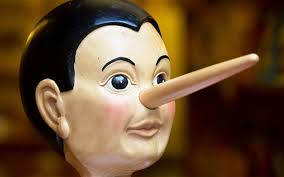

uganka laži in ključa
naslednja uganka
pokaži uganko
eden od treh ima ključ
prvi pravi:jaz ga imam
drugi pravi jaz ga nimam
tretji pravi: prvi ga nima
Kdo ima ključ če največ eden govori resnico
tukaj ti bo povedalo če je pav ali narobe
odgovor
Prvi laže, da ga ima
Tretji govori resnico saj ga prvi res nima
Drugi laže da ga nima.